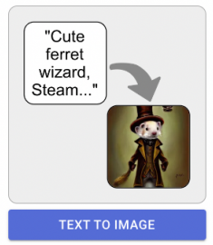
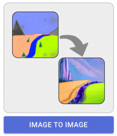
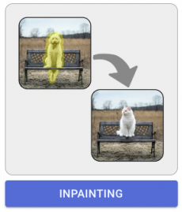
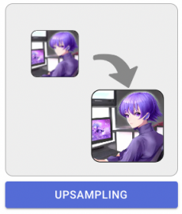

디자인 옵션 탐색
Stable Diffusion의 기본기능입니다
1. txt2img (텍스트에서 이미지 생성)
2. img2img (이미지에서 이미지 변형)
2-1 inpainting (이미지의 특정 부분을 다시 그리기)
3. Upscaling (이미지 크키 및 퀄리티 재생성)
Stable Diffusion은 지속적으로 발전하고 있으며, 커뮤니티에 의해 다양한 addon이 개발되고 있습니다.

1. txt2img (텍스트로 이미지 생성)
txt2img는 사용자가 입력한 프롬프트에 따라 관련 이미지를 생성해주는 핵심 기능입니다. 이 기능을 활용하려면 텍스트 프롬프트 (이미지로 변환하고자 하는 텍스트)이 필요합니다.

2. img2img (이미지로 이미지 생성)
img2img 기능은 원본 이미지에 스타일 이미지, 텍스트를 적용하여 새로운 이미지를 생성합니다. 이 기능을 활용하려면 원본 이미지 (스타일을 적용하고자 하는 이미지),텍스트 프롬프트 (선택 사항):스타일 변환의 방향을 지정하는 텍스트가 필요합니다.
2-1. inpaint/outpaint (이미지 마스크 지정 변경)

inpaint 기능은 이미지의 변경이 필요한 구역을 지정하여 AI가 해당 구역의 이미지를 생성합니다. 이 기능을 활용하려면 원본 이미지 (수정하고자 하는 이미지), 마스크 변경하거나 복원할 영역을 표시한 마스크 이미지를 설정해야 합니다.
3. Upscaling (이미지 크기 및 퀄리티 조절)

Upscaling은 원본 이미지의 해상도를 높이는 과정입니다. 하지만 단순히 픽셀 수를 늘리는 것이 아니라, 이미지의 품질을 개선하기 위해 추가적인 정보를 추론하여 생성합니다.